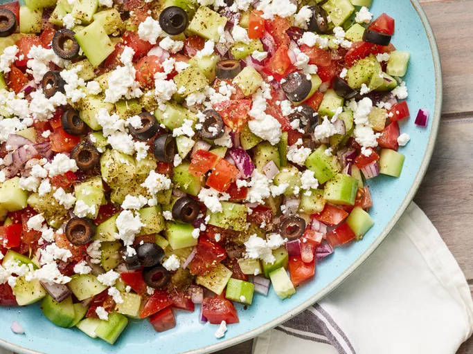

This refreshing Greek salad combines crisp cucumbers, juicy tomatoes, red onion, and creamy feta cheese for a light and flavorful summer dish.
Gather all ingredients.
Toss tomatoes, cucumbers, and red onion together in a shallow salad bowl.
Drizzle oil and lemon juice over top, then sprinkle with oregano, salt, and pepper.
Top with feta and olives. Enjoy!